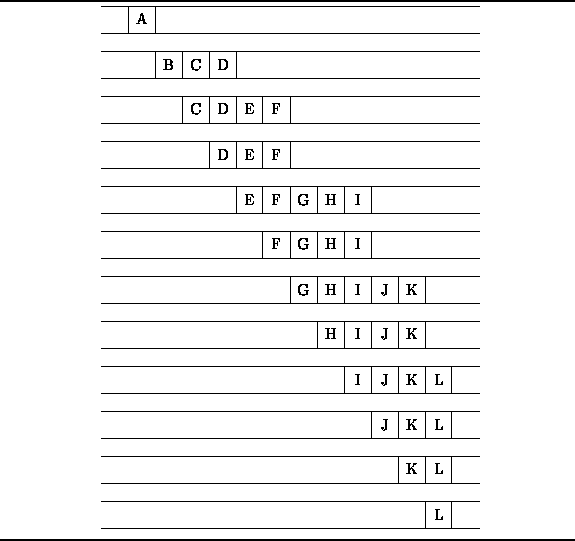

Data Structures and Algorithms
with Object-Oriented Design Patterns in Java
Data Structures and Algorithms
with Object-Oriented Design Patterns in Java
The FIFO nature of queues makes them useful in certain algorithms.
For example, we will see in Chapter  that a queue
is an essential data structure for many different graph algorithms.
In this section we illustrate the use of a queue
in the breadth-first traversal of a tree.
that a queue
is an essential data structure for many different graph algorithms.
In this section we illustrate the use of a queue
in the breadth-first traversal of a tree.
Figure shows an example of a tree.
A tree is comprised of nodes (indicated by the circles)
and edges (shown as arrows between nodes).
We say that the edges point from the parent node
to a child node.
The degree of a node
is equal to the number of children of that node.
For example, node A in Figure has degree three
and its children are nodes B, C, and D.
A child and all of its descendents is called a subtree .
One way to represent such a tree is to use a collection of linked structures.
Consider the following interface definition which is an abridged version
of the Tree interface described in Chapter .
public interface Tree
{
Object getKey ();
int getDegree ();
Tree getSubtree (int i);
};
Each node in a tree is represented
by an object that implements the Tree interface.
The getKey() method returns an object which represents
the contents of the node.
E.g. in Figure , each node carries a one-character label
so the getKey() method would return a Character class instance
that represents that label.
The getDegree method returns the degree of the node.
and the getSubtree method takes an int argument i
and returns the corresponding child of that node.
One of the essential operations on a tree
is a tree traversal .
A traversal visits one-by-one all the nodes in a given tree.
To visit a node means to perform some computation
using the information contained in that node--e.g., print the key.
The standard tree traversals are discussed in Chapter .
In this section we consider a traversal which is based on
the levels of the nodes in the tree.
Each node in a tree has an associated level
which arises from the position of that node in the tree.
For example, node A in Figure is at level 0,
nodes B, C, and D are at level 1, etc.
A breadth-first traversal
visits the nodes of a tree in the order of their levels.
At each level, the nodes are visited from left to right.
For this reason, it is sometimes also called a
level-order traversal .
The breadth-first traversal of the tree in Figure
visits the nodes from A to L in alphabetical order.
One way to implement a breadth-first traversal of a tree is to make use of a queue as follows: To begin the traversal, the root node of the tree is enqueued. Then, we repeat the following steps until the queue is empty:
illustrates the breadth-first traversal algorithm
by showing the contents of the queue
immediately prior to each iteration.

Figure: Queue contents during the breadth-first traversal of the tree in Figure .
 Copyright © 1998 by Bruno R. Preiss, P.Eng. All rights reserved.
Copyright © 1998 by Bruno R. Preiss, P.Eng. All rights reserved.